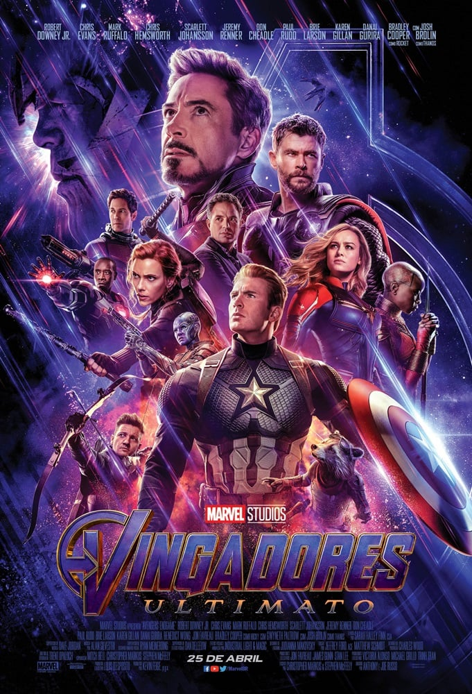

destaques
- 
Após Thanos eliminar metade das criaturas vivas,
os Vingadores têm de lidar com a perda de amigos e entes queridos.
Com Tony Stark vagando perdido no espaço sem água e comida, Steve Rogers e Natasha Romanov lideram a resistência contra o titã louco.

Após dois anos espreitando as ruas como Batman, Bruce Wayne se encontra nas profundezas mais sombrias de Gotham City. Com poucos aliados confiáveis, o vigilante solitário se estabelece como a personificação da vingança para a população.
Andrew sonha em ser o melhor baterista de sua geração. Ele chama a atenção do impiedoso mestre do jazz Terence Fletcher, que ultrapassa os limites e transforma seu sonho em uma obsessão, colocando em risco a saúde física e mental do jovem músico.
Após Thanos eliminar metade das criaturas vivas,
os Vingadores têm de lidar com a perda de amigos e entes queridos.
Com Tony Stark vagando perdido no espaço sem água e comida, Steve Rogers e Natasha Romanov lideram a resistência contra o titã louco.
Após dois anos espreitando as ruas como Batman, Bruce Wayne se encontra nas profundezas mais sombrias de Gotham City. Com poucos aliados confiáveis, o vigilante solitário se estabelece como a personificação da vingança para a população.
Andrew sonha em ser o melhor baterista de sua geração. Ele chama a atenção do impiedoso mestre do jazz Terence Fletcher, que ultrapassa os limites e transforma seu sonho em uma obsessão, colocando em risco a saúde física e mental do jovem músico.